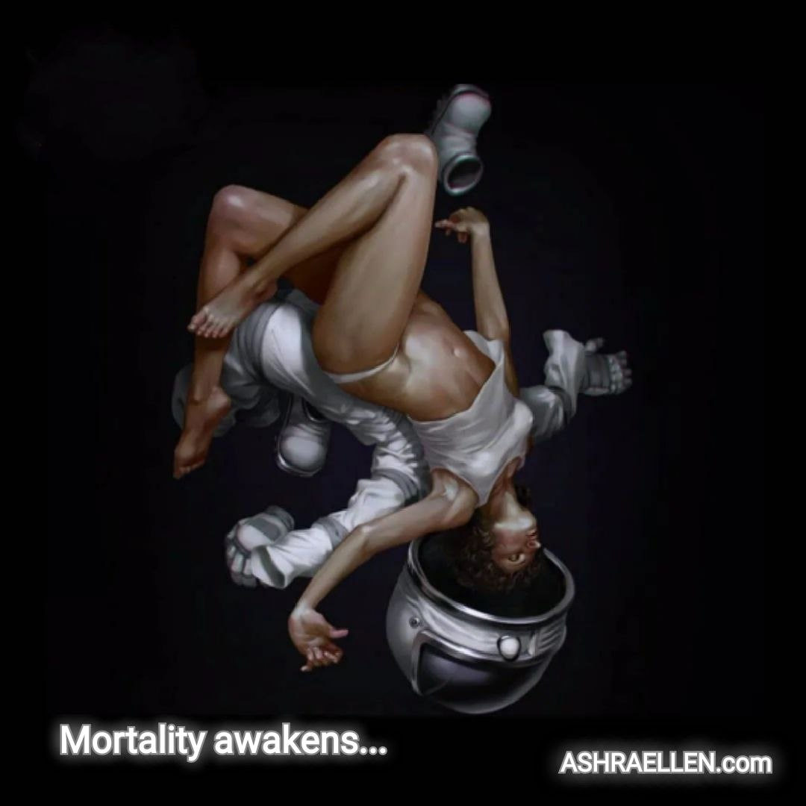

Support thoughts
ARC 0001
First arc of support thoughts
Cheerfulness, old forces, awakening, finitude, fear and insight.
This arc gathers the first six support thoughts of the Ashraellen public field. Each thought is opened separately: through a striking line, full text, meaning, reason for selection and research note.

Support thought 0001
Cheerfulness as a Diagnosis of a Person
Laughter often reveals a person more precisely than correct speeches.
Open thought →
Support thought 0002
The Same Forces, New Names
Ancient forces have not disappeared. They have simply received modern names.
Open thought →
Support thought 0003
Awakening Begins When Continuing Becomes Impossible
The inner turn begins where the former path can no longer continue.
Open thought →
Support thought 0004
Finitude Awakens the Question
Many begin to think when their illusions run out.
Open thought →
Support thought 0005
Fear as a Mechanism of Control
An independent person is harder to control because he stops living inside fear.
Open thought →
Support thought 0006
A Deeper Gaze Gathers Life
A deeper gaze gathers mistakes, pain and experience into a chain of understanding.
Open thought → — mark of presence
— mark of presence